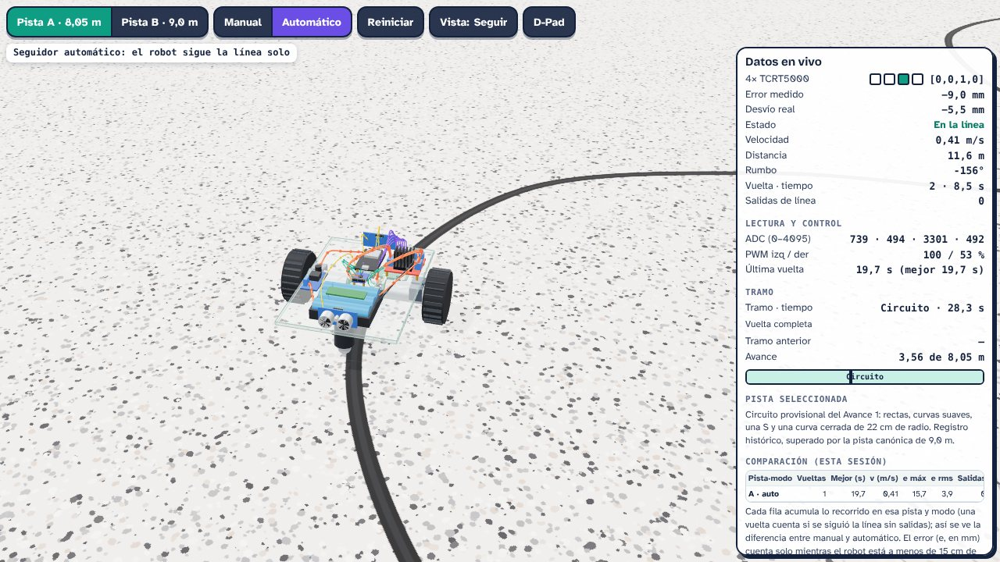
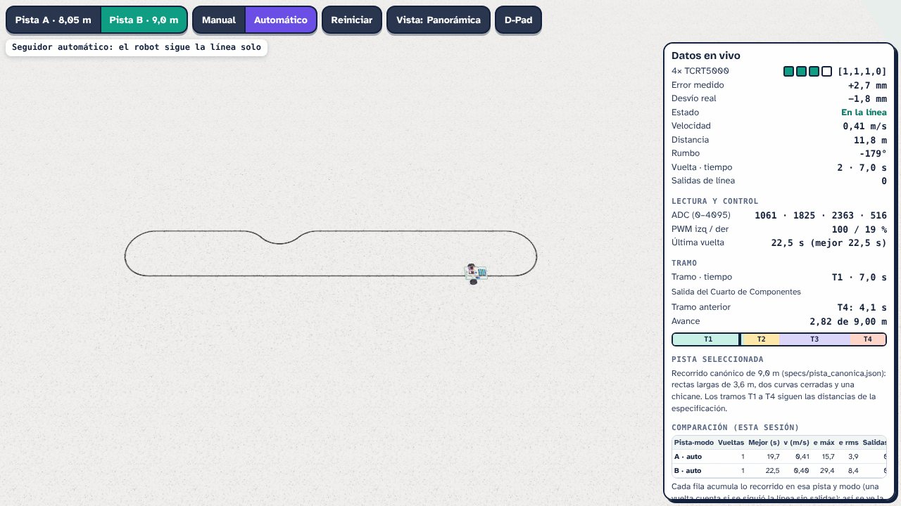
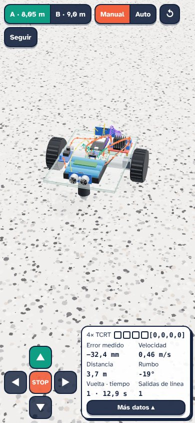

Prototipos
P04 · Simulador 1 + ESP32
El robot sigue la línea y la placa se enciende
EN VIVO · MQTT v2.0.0 · ROBOT SIMULADOPara los curiosos
- Placa ESP32: cada LED (S1…S4, GPIO 36, 39, 34 y 35) se enciende con la misma lectura que usa el control PD a 100 Hz; las barras ENA/ENB son el PWM de cada motor (ámbar = hacia atrás) y TX parpadea cada 2 s, como la telemetría del ESP32.
- Pistas: A (circuito histórico, 8,05 m) y B (canónica, 9,0 m, tramos T1–T4 de
specs/pista_canonica.json). - Velocidad: ≈ 0,41 m/s siguiendo la línea y 0,46 m/s en las rectas; modelo JGA25-371 Speed 200 con L298N y batería 3S.
- Lo que sigue es el Gemelo Digital (P05), que aprende y repite la ruta en estas mismas pistas. Todo es simulación (SIL) [PENDIENTE DE MEDICIÓN FÍSICA].



